<title>Leah Roling UI &amp; UX Overview</title>
<meta name="claude:viewport-fit-sides" content="cover">
<link rel="stylesheet" href="https://fonts.googleapis.com/css2?family=Bricolage+Grotesque:opsz,wght@12..96,400..800&family=Instrument+Sans:ital,wght@0,400..700;1,400..700&display=swap">
<style>
/* Layout: a long-scroll case study in full-width color bands. Each band has a left-aligned
   heading and wide media. Real screenshots sit in device frames; the parts in the kit are live. */
:root {
  /* brand accents (same in both themes) */
  --sun: #ffc933;
  --lilac: #c8b6ff;
  --on-accent: #17161b;
  /* page surfaces and text */
  --bg: #fffdf8;
  --bg-2: #f5f2ec;
  --card: #ffffff;
  --fg: #17161b;
  --muted: #646069;
  --tint-sun: #fff0bf;
  --tint-lilac: #f0ebff;
  --line: rgba(23, 22, 27, 0.13);
  --dark-band: #17161b;
  --dark-card: #232229;
  --on-dark: #fffdf8;
  --on-dark-muted: #b9b5c0;
  --frame: #17161b;
  --shadow: 0 34px 60px -34px rgba(23, 22, 27, 0.45);
  --hl-bg: var(--sun);
  --hl-fg: inherit;
  /* the site's own fixed colors, used inside screenshots frames and the live parts */
  --s-ink: #17161b;
  --s-paper: #fffdf8;
  --s-cloud: #f5f2ec;
  --s-butter: #fff0bf;
  --s-lav: #f0ebff;
  --s-stone: #646069;
  /* type */
  --display: "Bricolage Grotesque", "Instrument Sans", "Helvetica Neue", Arial, sans-serif;
  --text: "Instrument Sans", system-ui, -apple-system, "Segoe UI", Roboto, sans-serif;
  --ease: cubic-bezier(0.16, 1, 0.3, 1);
  --back: cubic-bezier(0.34, 1.56, 0.64, 1);
}
@media (prefers-color-scheme: dark) {
  :root:not([data-theme="light"]) {
    --bg: #121116; --bg-2: #1a191f; --card: #222128; --fg: #fffdf8; --muted: #b4b0bc;
    --tint-sun: #3a3010; --tint-lilac: #2b2545; --line: rgba(255, 253, 248, 0.15);
    --dark-band: #0b0a0e; --dark-card: #1a191f; --frame: #2e2d35;
    --shadow: 0 34px 60px -34px rgba(0, 0, 0, 0.8);
    --hl-bg: transparent; --hl-fg: var(--sun);
    color-scheme: dark;
  }
}
:root[data-theme="dark"] {
  --bg: #121116; --bg-2: #1a191f; --card: #222128; --fg: #fffdf8; --muted: #b4b0bc;
  --tint-sun: #3a3010; --tint-lilac: #2b2545; --line: rgba(255, 253, 248, 0.15);
  --dark-band: #0b0a0e; --dark-card: #1a191f; --frame: #2e2d35;
  --shadow: 0 34px 60px -34px rgba(0, 0, 0, 0.8);
  --hl-bg: transparent; --hl-fg: var(--sun);
  color-scheme: dark;
}

*, *::before, *::after { box-sizing: border-box; }
html { scroll-behavior: smooth; scroll-padding-top: 76px; }
body {
  background: var(--bg); color: var(--fg);
  font-family: var(--text); font-size: 1.0625rem; line-height: 1.6;
  -webkit-font-smoothing: antialiased; overflow-x: clip;
}
body::before { content: ""; position: fixed; inset: 0 0 auto; height: env(safe-area-inset-top, 0px); z-index: 10; background: var(--bg); }
h1, h2, h3, h4, p, ul, ol, figure, dl, dd, blockquote { margin: 0; }
ul, ol { padding: 0; list-style: none; }
img { display: block; }
a { color: inherit; }
button { font: inherit; color: inherit; background: none; border: 0; padding: 0; cursor: pointer; }
:focus-visible { outline: 3px solid var(--lilac); outline-offset: 3px; border-radius: 8px; }

.wrap {
  max-width: 1200px; margin-inline: auto;
  padding-left: max(16px, env(safe-area-inset-left, 0px));
  padding-right: max(16px, env(safe-area-inset-right, 0px));
}
@media (min-width: 720px) {
  .wrap { padding-left: max(40px, env(safe-area-inset-left, 0px)); padding-right: max(40px, env(safe-area-inset-right, 0px)); }
}

/* ---------- type ---------- */
.h1, .h2, .h3, .big { font-family: var(--display); font-weight: 660; letter-spacing: -0.045em; line-height: 0.98; text-wrap: balance; }
.h1 { font-size: clamp(2.7rem, 1.3rem + 5.6vw, 6.4rem); line-height: 0.93; }
.h2 { font-size: clamp(2.1rem, 1.3rem + 3.1vw, 4.1rem); }
.h3 { font-size: clamp(1.3rem, 1.15rem + 0.5vw, 1.6rem); letter-spacing: -0.035em; line-height: 1.08; }
.h1 em, .h2 em, .big em {
  font-style: normal; color: var(--hl-fg);
  background: linear-gradient(var(--hl-bg), var(--hl-bg)) no-repeat 0 86% / 100% 0.36em;
  padding-inline: 0.04em; margin-inline: -0.04em;
}
.lede { font-size: clamp(1.08rem, 1rem + 0.4vw, 1.28rem); line-height: 1.55; color: var(--muted); max-width: 62ch; }
.label { display: inline-flex; align-items: center; gap: 10px; font-size: 0.74rem; font-weight: 650; letter-spacing: 0.18em; text-transform: uppercase; }
.label::before { content: ""; width: 10px; height: 10px; border-radius: 50%; background: var(--sun); flex: none; }
.small { font-size: 0.88rem; color: var(--muted); }
.num { font-variant-numeric: tabular-nums; }

/* ---------- bands ---------- */
.band { padding-block: clamp(72px, 9vw, 136px); }
.band--alt { background: var(--bg-2); }
.band--sun { background: var(--sun); color: var(--on-accent); --fg: var(--on-accent); --muted: rgba(23, 22, 27, 0.76); --line: rgba(23, 22, 27, 0.18); --hl-bg: var(--s-paper); --hl-fg: var(--on-accent); }
.band--sun .label::before { background: var(--on-accent); }
.band--lilac { background: var(--lilac); color: var(--on-accent); --fg: var(--on-accent); --muted: rgba(23, 22, 27, 0.76); --line: rgba(23, 22, 27, 0.18); --hl-bg: var(--sun); --hl-fg: var(--on-accent); }
.band--lilac .label::before { background: var(--on-accent); }
.band--dark { background: var(--dark-band); color: var(--on-dark); --fg: var(--on-dark); --muted: var(--on-dark-muted); --line: rgba(255, 253, 248, 0.15); --hl-bg: transparent; --hl-fg: var(--sun); }
.head { display: grid; gap: 20px; margin-bottom: clamp(40px, 5vw, 72px); }
.head .h2 { max-width: 16ch; }

/* ---------- top bar ---------- */
.top { position: sticky; top: env(safe-area-inset-top, 0px); z-index: 9; background: var(--bg); border-bottom: 1px solid var(--line); }
.top__in { display: flex; align-items: center; gap: 20px; min-height: 60px; }
.top__brand { display: inline-flex; align-items: center; gap: 10px; text-decoration: none; font-family: var(--display); font-weight: 680; letter-spacing: -0.035em; font-size: 1.05rem; white-space: nowrap; flex: none; }
.top__brand svg { width: 20px; height: 26px; }
.top__nav { display: flex; gap: 2px; overflow-x: auto; scrollbar-width: none; min-width: 0; margin-left: auto; }
.top__nav::-webkit-scrollbar { display: none; }
.top__nav a { flex: none; display: inline-flex; align-items: center; height: 44px; padding: 0 12px; border-radius: 999px; text-decoration: none; font-size: 0.88rem; font-weight: 550; color: var(--muted); }
.top__nav a:hover { color: var(--fg); background: var(--bg-2); }
@media (max-width: 719px) { .top__brand span { display: none; } }

/* ---------- device frames ---------- */
.browser { border-radius: 14px; background: var(--frame); overflow: hidden; box-shadow: var(--shadow); max-width: 100%; }
.browser__bar { display: flex; align-items: center; gap: 6px; padding: 9px 14px; }
.browser__bar i { width: 9px; height: 9px; border-radius: 50%; background: rgba(255, 253, 248, 0.3); }
.browser__bar span { margin-left: 12px; padding: 3px 14px; border-radius: 999px; background: rgba(255, 253, 248, 0.12); font-size: 0.68rem; letter-spacing: 0.02em; color: rgba(255, 253, 248, 0.72); }
.browser img { width: 100%; height: auto; }
.phone { border-radius: clamp(20px, 3.2vw, 34px); background: var(--frame); padding: clamp(5px, 0.7vw, 8px); box-shadow: var(--shadow); max-width: 100%; }
.phone img { width: 100%; height: auto; border-radius: clamp(15px, 2.6vw, 27px); }

/* ---------- hero ---------- */
.hero { padding-block: clamp(48px, 7vw, 96px) clamp(72px, 9vw, 128px); overflow: clip; }
.hero__text { display: grid; gap: 24px; max-width: 900px; }
.hero__stage { position: relative; margin-top: clamp(44px, 6vw, 80px); padding-right: clamp(0px, 6vw, 84px); padding-bottom: clamp(28px, 5vw, 64px); }
.hero__stage::before { content: ""; position: absolute; z-index: 0; right: -4%; top: -9%; width: 30%; aspect-ratio: 1; border-radius: 50%; background: var(--sun); }
.hero__stage::after { content: ""; position: absolute; z-index: 0; left: -3%; bottom: 0; width: 22%; height: 62%; border-radius: 999px 999px 0 0; background: var(--lilac); }
.hero__stage .browser { position: relative; z-index: 1; }
.hero__stage .phone { position: absolute; z-index: 2; right: 0; bottom: 0; width: clamp(96px, 21%, 250px); }
.facts { display: grid; grid-template-columns: repeat(2, minmax(0, 1fr)); gap: 28px 32px; margin-top: clamp(48px, 6vw, 80px); padding-top: 28px; border-top: 1px solid var(--line); }
@media (min-width: 860px) { .facts { grid-template-columns: repeat(4, minmax(0, 1fr)); } }
.facts dt { font-family: var(--display); font-weight: 660; font-size: clamp(1.7rem, 1.3rem + 1.4vw, 2.5rem); letter-spacing: -0.045em; line-height: 1.05; }
.facts dd { margin-top: 6px; font-size: 0.92rem; color: var(--muted); max-width: 26ch; }

/* ---------- brief ---------- */
.words { border-top: 1.5px solid var(--on-accent); }
.words li { display: grid; gap: 6px 40px; padding-block: clamp(18px, 2.4vw, 30px); border-bottom: 1.5px solid var(--line); align-items: baseline; }
@media (min-width: 780px) { .words li { grid-template-columns: minmax(0, 0.9fr) minmax(0, 1.1fr); } }
.words .big { font-size: clamp(2.2rem, 1.4rem + 3.4vw, 4.6rem); }
.words p { font-size: 1.08rem; max-width: 46ch; min-width: 0; }

/* ---------- visitors ---------- */
.vtabs { display: flex; gap: 8px; overflow-x: auto; scrollbar-width: none; padding-bottom: 4px; }
.vtabs::-webkit-scrollbar { display: none; }
.vtab { flex: none; min-height: 48px; padding: 0 20px; border-radius: 999px; background: var(--bg-2); font-weight: 620; transition: background-color 0.3s, color 0.3s, transform 0.4s var(--back); }
.vtab:hover { background: var(--tint-lilac); }
.vtab[aria-selected="true"] { background: var(--sun); color: var(--on-accent); transform: scale(1.03); }
.vpanel { display: grid; gap: clamp(28px, 4vw, 64px); margin-top: clamp(28px, 4vw, 48px); }
@media (min-width: 900px) { .vpanel { grid-template-columns: minmax(0, 1fr) minmax(0, 1fr); align-items: start; } }
.vpanel > * { min-width: 0; }
.vthought { font-family: var(--display); font-weight: 640; font-size: clamp(1.7rem, 1.2rem + 2vw, 2.9rem); letter-spacing: -0.04em; line-height: 1.04; text-wrap: balance; }
.vthought::before { content: "\201C"; display: block; height: 0.55em; color: var(--sun); font-size: 2.2em; line-height: 1; }
.vwho { margin-top: 18px; color: var(--muted); max-width: 44ch; }
.vsteps { display: grid; gap: 10px; counter-reset: s; }
.vsteps li { counter-increment: s; display: grid; grid-template-columns: 36px minmax(0, 1fr); gap: 14px; align-items: start; padding: 14px 18px 14px 14px; border-radius: 18px; background: var(--bg-2); }
.vsteps li::before { content: counter(s); display: grid; place-items: center; width: 36px; height: 36px; border-radius: 50%; background: var(--sun); color: var(--on-accent); font-family: var(--display); font-weight: 700; }
.vsteps b { display: block; font-weight: 650; }
.vsteps span { font-size: 0.94rem; color: var(--muted); }
.vask { display: flex; flex-wrap: wrap; align-items: center; gap: 10px 14px; margin-top: 16px; padding: 14px 18px; border-radius: 18px; background: var(--tint-lilac); }
.vask b { font-size: 0.72rem; letter-spacing: 0.16em; text-transform: uppercase; }
.vask span { display: inline-flex; align-items: center; min-height: 36px; padding: 0 16px; border-radius: 999px; background: var(--fg); color: var(--bg); font-weight: 650; font-size: 0.92rem; }
.maphead { display: flex; flex-wrap: wrap; justify-content: space-between; gap: 8px 24px; margin-top: clamp(44px, 6vw, 72px); margin-bottom: 20px; }
.map { display: grid; grid-template-columns: repeat(7, minmax(0, 1fr)); gap: 16px clamp(6px, 1vw, 14px); padding-top: 14px; }
@media (min-width: 900px) { .map { grid-template-columns: repeat(14, minmax(0, 1fr)); } }
.map li { display: grid; gap: 8px; justify-items: center; align-content: start; min-width: 0; }
.door { position: relative; width: 100%; aspect-ratio: 3 / 4.3; border-radius: 999px 999px 6px 6px; background: var(--c); color: var(--t, #17161b); border: 1.5px solid var(--line); display: grid; place-items: center; font-family: var(--display); font-weight: 700; font-size: clamp(0.85rem, 0.6rem + 0.7vw, 1.15rem); opacity: 0.34; transition: opacity 0.4s, transform 0.6s var(--back), border-color 0.4s; }
.map .name { font-size: 0.7rem; font-weight: 600; line-height: 1.2; text-align: center; color: var(--muted); display: none; }
@media (min-width: 900px) { .map .name { display: block; } }
.map li.on .door { opacity: 1; transform: translateY(-8px); border-color: var(--fg); }
.map li.on .name { color: var(--fg); }
.map li.on .door::after { content: attr(data-step); position: absolute; top: -12px; left: 50%; translate: -50% 0; display: grid; place-items: center; width: 24px; height: 24px; border-radius: 50%; background: var(--fg); color: var(--bg); font-family: var(--text); font-size: 0.72rem; font-weight: 700; }
.c-paper { --c: #fffdf8; } .c-cloud { --c: #f5f2ec; } .c-sun { --c: #ffc933; } .c-lilac { --c: #c8b6ff; } .c-ink { --c: #17161b; --t: #fffdf8; }

/* ---------- page flow ---------- */
.act { margin-top: clamp(48px, 6vw, 88px); }
.act:first-of-type { margin-top: 0; }
.act__head { display: flex; flex-wrap: wrap; align-items: baseline; gap: 8px 20px; padding-bottom: 18px; margin-bottom: 26px; border-bottom: 1.5px solid var(--fg); }
.act__n { display: inline-flex; align-items: center; height: 30px; padding: 0 14px; border-radius: 999px; background: var(--fg); color: var(--bg); font-size: 0.72rem; font-weight: 700; letter-spacing: 0.14em; text-transform: uppercase; align-self: center; }
.act__q { color: var(--muted); margin-left: auto; }
.cards { display: grid; gap: clamp(28px, 3.4vw, 48px) clamp(20px, 2.6vw, 36px); }
@media (min-width: 760px) { .cards { grid-template-columns: repeat(2, minmax(0, 1fr)); } }
.card { display: grid; gap: 16px; align-content: start; min-width: 0; }
.shot { position: relative; aspect-ratio: 16 / 10; max-width: 100%; border-radius: 18px; overflow: hidden; background: var(--s-cloud); border: 1px solid var(--line); cursor: zoom-in; }
.shot img { position: absolute; inset: 0; width: 100%; height: 100%; object-fit: cover; object-position: 50% 0; transition: object-position 4.5s cubic-bezier(0.45, 0, 0.25, 1); }
.shot:hover img, .shot:focus img, .shot.is-on img { object-position: 50% 100%; }
.shot--strip { background: #ffc933; cursor: default; }
.shot--strip img { object-fit: contain; object-position: 50% 50%; }
.card__t { display: flex; align-items: center; gap: 12px; }
.card__n { display: grid; place-items: center; width: 34px; height: 34px; border-radius: 50%; background: var(--sun); color: var(--on-accent); font-family: var(--display); font-weight: 700; font-size: 0.95rem; flex: none; }
.card__job { font-weight: 600; max-width: 48ch; }
.card__how { color: var(--muted); font-size: 0.96rem; max-width: 52ch; }

/* ---------- kit ---------- */
.kit { display: grid; gap: clamp(44px, 6vw, 80px); }
.kit h3 { margin-bottom: 20px; }
.swatches { display: grid; grid-template-columns: repeat(2, minmax(0, 1fr)); gap: 12px; }
@media (min-width: 860px) { .swatches { grid-template-columns: repeat(4, minmax(0, 1fr)); } }
.sw { border-radius: 22px; padding: 18px; min-height: 168px; display: flex; flex-direction: column; justify-content: space-between; background: var(--c); color: var(--t, #17161b); border: 1px solid var(--line); }
.sw--s { min-height: 96px; }
.sw b { font-family: var(--display); font-size: 1.35rem; letter-spacing: -0.035em; }
.sw span { font-size: 0.84rem; opacity: 0.82; }
.sw code { font-family: ui-monospace, "SF Mono", Menlo, monospace; font-size: 0.78rem; opacity: 0.82; }
.ratio { display: flex; height: 16px; border-radius: 999px; overflow: hidden; margin-top: 16px; border: 1px solid var(--line); }
.ratio i { display: block; }
.two { display: grid; gap: 16px; }
@media (min-width: 860px) { .two { grid-template-columns: repeat(2, minmax(0, 1fr)); } }
.spec { border-radius: 22px; padding: clamp(22px, 3vw, 36px); background: var(--bg-2); display: grid; gap: 14px; align-content: start; min-width: 0; }
.spec__aa { font-family: var(--display); font-weight: 700; font-size: clamp(3.4rem, 2.4rem + 4vw, 6rem); letter-spacing: -0.06em; line-height: 0.9; }
.spec--text .spec__aa { font-family: var(--text); font-weight: 600; letter-spacing: -0.03em; }
.spec__line { font-family: var(--display); font-weight: 640; font-size: clamp(1.3rem, 1.1rem + 0.8vw, 1.8rem); letter-spacing: -0.04em; line-height: 1.05; }
.shapes { display: grid; gap: 16px; }
@media (min-width: 860px) { .shapes { grid-template-columns: repeat(3, minmax(0, 1fr)); } }
.shape { border-radius: 22px; padding: clamp(22px, 3vw, 32px); background: var(--bg-2); display: grid; gap: 12px; align-content: start; min-width: 0; }
.shape__fig { height: 108px; display: flex; align-items: flex-end; gap: 14px; margin-bottom: 6px; }
.fig-door { width: 70px; height: 100px; border-radius: 999px 999px 0 0; background: var(--lilac); }
.fig-sun { width: 84px; height: 84px; border-radius: 50%; background: var(--sun); }
.fig-pill { height: 46px; padding: 0 22px; border-radius: 999px; background: var(--fg); color: var(--bg); display: inline-flex; align-items: center; font-weight: 650; font-size: 0.92rem; }
.shape p { color: var(--muted); font-size: 0.96rem; }

/* live parts: a piece of the real site, always in the site's own light colors */
.stage { border-radius: 28px; background: var(--s-paper); color: var(--s-ink); padding: clamp(18px, 3vw, 40px); display: grid; gap: clamp(22px, 3vw, 36px); border: 1px solid var(--line); }
@media (min-width: 860px) { .stage { grid-template-columns: repeat(2, minmax(0, 1fr)); } }
.cell { display: grid; gap: 14px; align-content: start; min-width: 0; }
.cell__cap { font-size: 0.72rem; font-weight: 650; letter-spacing: 0.16em; text-transform: uppercase; color: var(--s-stone); }
.row { display: flex; flex-wrap: wrap; gap: 10px 14px; align-items: center; }
.sb { position: relative; display: inline-flex; align-items: center; gap: 10px; min-height: 52px; padding: 0 26px; border-radius: 999px; background: var(--s-ink); color: var(--s-paper); font-weight: 650; overflow: hidden; isolation: isolate; transition: color 0.35s; }
.sb::before { content: ""; position: absolute; left: 50%; top: 50%; z-index: -1; width: 150%; aspect-ratio: 1; border-radius: 50%; background: var(--sun); transform: translate(-50%, -50%) scale(0); transition: transform 0.6s var(--ease); }
.sb:hover, .sb:focus-visible { color: var(--s-ink); }
.sb:hover::before, .sb:focus-visible::before { transform: translate(-50%, -50%) scale(1); }
.sb--sun { background: var(--sun); color: var(--s-ink); }
.sb--sun::before { background: var(--s-ink); }
.sb--sun:hover, .sb--sun:focus-visible { color: var(--s-paper); }
.sb i, .sl i { font-style: normal; transition: transform 0.45s var(--ease); }
.sb:hover i, .sl:hover i { transform: translateX(4px); }
.sl { position: relative; display: inline-flex; align-items: center; gap: 8px; min-height: 44px; font-weight: 650; }
.sl::after { content: ""; position: absolute; left: 0; right: 0; bottom: 8px; height: 2px; border-radius: 2px; background: currentColor; transform-origin: right; transition: transform 0.5s var(--ease); }
.sl:hover::after { transform: scaleX(0); }
.sc { min-height: 46px; padding: 0 18px; border-radius: 999px; background: var(--s-cloud); font-weight: 600; transition: background-color 0.3s, transform 0.4s var(--back); }
.sc[aria-pressed="true"] { background: var(--sun); transform: scale(1.04); }
.sd { position: relative; width: min(100%, 250px); padding: 64px 22px 22px; border-radius: 999px 999px 22px 22px; background: var(--s-butter); text-align: center; overflow: hidden; isolation: isolate; display: grid; gap: 8px; transition: transform 0.8s var(--ease); cursor: pointer; }
.sd::before { content: ""; position: absolute; z-index: -1; left: 50%; bottom: 0; width: 240%; aspect-ratio: 1; border-radius: 50%; background: var(--sun); transform: translate(-50%, 100%); transition: transform 0.9s var(--ease); }
.sd:hover, .sd:focus-visible { transform: translateY(-6px); }
.sd:hover::before, .sd:focus-visible::before { transform: translate(-50%, 45%); }
.sd i { position: absolute; top: 22px; left: 50%; translate: -50% 0; width: 16px; height: 16px; border-radius: 50%; background: var(--sun); box-shadow: 0 0 0 6px rgba(255, 253, 248, 0.7); }
.sd small { font-size: 0.66rem; font-weight: 650; letter-spacing: 0.16em; text-transform: uppercase; }
.sd b { font-family: var(--display); font-size: 1.6rem; letter-spacing: -0.04em; line-height: 1; }
.sd span { font-size: 0.86rem; color: rgba(23, 22, 27, 0.72); }
.st { border-radius: 18px; background: var(--s-cloud); transition: background-color 0.4s; }
.st[open] { background: var(--s-butter); }
.st summary { list-style: none; display: grid; grid-template-columns: minmax(0, 1fr) 40px; gap: 12px; align-items: center; padding: 14px 16px 14px 20px; cursor: pointer; font-family: var(--display); font-weight: 620; font-size: 1.2rem; letter-spacing: -0.035em; line-height: 1.15; }
.st summary::-webkit-details-marker { display: none; }
.st summary::after { content: "+"; display: grid; place-items: center; width: 40px; height: 40px; border-radius: 50%; background: var(--s-paper); font-family: var(--text); font-weight: 500; font-size: 1.3rem; transition: transform 0.5s var(--back), background-color 0.3s; }
.st[open] summary::after { content: "\2212"; background: var(--sun); transform: rotate(180deg); }
.st p { padding: 0 20px 18px; font-size: 0.94rem; color: rgba(23, 22, 27, 0.76); }
.se { display: grid; grid-template-columns: auto minmax(0, 1fr) 44px; gap: 14px; align-items: center; padding: 10px 10px 10px 18px; border-radius: 18px; background: var(--s-ink); color: var(--s-paper); transition: transform 0.6s var(--ease); cursor: pointer; }
.se:hover { transform: translateX(6px); }
.se small { font-size: 0.74rem; font-weight: 700; letter-spacing: 0.08em; color: var(--lilac); }
.se b { font-family: var(--display); font-weight: 580; letter-spacing: -0.025em; line-height: 1.2; }
.se i { display: grid; place-items: center; width: 44px; height: 44px; border-radius: 50%; background: var(--sun); transition: transform 0.5s var(--back); }
.se:hover i { transform: scale(1.1); }
.se i::before { content: ""; border: 7px solid transparent; border-left: 11px solid var(--s-ink); margin-left: 6px; }
.sf { display: grid; gap: 8px; }
.sf label { font-size: 0.76rem; font-weight: 650; letter-spacing: 0.06em; text-transform: uppercase; color: var(--s-stone); }
.sf input[type="text"] { width: 100%; min-height: 52px; padding: 12px 18px; border-radius: 16px; border: 1.5px solid transparent; background: var(--s-cloud); color: var(--s-ink); font: inherit; transition: border-color 0.3s, box-shadow 0.3s, background-color 0.3s; }
.sf input[type="text"]:focus { outline: none; background: var(--s-paper); border-color: var(--s-ink); box-shadow: 0 0 0 5px var(--s-butter); }
.sp { position: relative; }
.sp input { position: absolute; inset: 0; opacity: 0; cursor: pointer; }
.sp span { display: inline-flex; align-items: center; min-height: 44px; padding: 0 16px; border-radius: 999px; background: var(--s-cloud); font-weight: 600; font-size: 0.9rem; transition: background-color 0.3s, transform 0.4s var(--back); }
.sp input:checked + span { background: var(--lilac); transform: scale(1.04); }
.sp input:focus-visible + span { outline: 3px solid var(--s-ink); outline-offset: 2px; }

/* ---------- motion ---------- */
.motion { display: grid; gap: clamp(32px, 5vw, 72px); }
@media (min-width: 940px) { .motion { grid-template-columns: minmax(0, 1.05fr) minmax(0, 0.95fr); align-items: start; } }
.motion > * { min-width: 0; }
.mini { position: relative; border-radius: 28px; background: var(--s-paper); color: var(--s-ink); padding: clamp(22px, 3.4vw, 44px); overflow: hidden; display: grid; grid-template-columns: minmax(0, 1.15fr) minmax(0, 0.85fr); gap: 18px; align-items: center; }
.mini__h { font-family: var(--display); font-weight: 670; font-size: clamp(1.2rem, 0.62rem + 2.3vw, 2.05rem); letter-spacing: -0.048em; line-height: 0.95; }
.mini__h span { display: block; white-space: nowrap; overflow: hidden; padding-bottom: 0.1em; margin-bottom: -0.1em; }
.mini__h span > b { display: inline-block; font-weight: inherit; }
.mini__h em { font-style: normal; background: linear-gradient(var(--sun), var(--sun)) no-repeat 0 86% / 100% 0.36em; padding-inline: 0.04em; margin-inline: -0.04em; }
.mini__v { position: relative; margin: 8% 12% 0 0; }
.mini__sun { position: absolute; width: 60%; aspect-ratio: 1; right: -18%; top: -9%; border-radius: 50%; background: var(--sun); }
.mini__door { position: absolute; inset: 9% -9% 0 9%; border-radius: 999px 999px 0 0; background: var(--lilac); }
.mini__p { position: relative; aspect-ratio: 4 / 5.1; max-width: 100%; border-radius: 999px 999px 0 0; overflow: hidden; }
.mini__p img { width: 100%; height: 100%; object-fit: cover; }
.mini.play .mini__h span > b { animation: mLine 0.9s var(--ease) both; }
.mini.play .mini__h span:nth-child(2) > b { animation-delay: 0.06s; }
.mini.play .mini__h span:nth-child(3) > b { animation-delay: 0.12s; }
.mini.play .mini__h em { animation: mSwipe 0.9s var(--ease) 0.45s both; }
.mini.play .mini__sun { animation: mSun 1.4s var(--ease) 0.1s both; }
.mini.play .mini__door { animation: mDoor 1.2s var(--ease) 0.25s both; }
.mini.play .mini__p img { animation: mSettle 1.6s var(--ease) both; }
@keyframes mLine { from { transform: translateY(58%); } }
@keyframes mSwipe { from { background-size: 0% 0.36em; } }
@keyframes mSun { from { transform: translateY(45%) scale(0.6); opacity: 0; } }
@keyframes mDoor { from { transform: translate(-9%, -9%); opacity: 0; } }
@keyframes mSettle { from { transform: scale(1.07); } }
.replay { margin-top: 16px; display: inline-flex; align-items: center; gap: 10px; min-height: 48px; padding: 0 22px; border-radius: 999px; background: var(--sun); color: var(--on-accent); font-weight: 650; transition: transform 0.4s var(--back); }
.replay:hover { transform: scale(1.04); }
.moves { display: grid; }
.moves li { display: grid; gap: 4px; padding-block: 16px; border-bottom: 1px solid var(--line); }
.moves li:first-child { padding-top: 0; }
.moves b { font-family: var(--display); font-weight: 640; font-size: 1.2rem; letter-spacing: -0.03em; }
.moves span { color: var(--muted); font-size: 0.96rem; }

/* ---------- devices ---------- */
.trio { display: grid; grid-template-columns: minmax(0, 0.62fr) minmax(0, 1.15fr) minmax(0, 2.4fr); gap: clamp(10px, 2vw, 28px); align-items: end; }
.trio figure { display: grid; gap: 12px; min-width: 0; }
@media (max-width: 699px) {
  .trio { grid-template-columns: minmax(0, 0.55fr) minmax(0, 1fr); }
  .trio figure:nth-child(3) { grid-column: 1 / -1; order: -1; }
}
.trio figcaption { font-size: 0.8rem; font-weight: 650; letter-spacing: 0.04em; }
.trio .tablet { border-radius: clamp(10px, 1.8vw, 22px); background: var(--frame); padding: clamp(4px, 0.7vw, 9px); box-shadow: var(--shadow); max-width: 100%; }
.trio .tablet img { width: 100%; height: auto; border-radius: clamp(7px, 1.3vw, 15px); }
.adapt { display: grid; gap: clamp(32px, 5vw, 64px); margin-top: clamp(48px, 7vw, 96px); }
@media (min-width: 940px) { .adapt { grid-template-columns: minmax(0, 0.9fr) minmax(0, 1.1fr); align-items: center; } }
.adapt > * { min-width: 0; }
.changes { display: grid; }
.changes li { display: grid; grid-template-columns: minmax(0, 0.42fr) minmax(0, 1fr); gap: 16px; padding-block: 14px; border-bottom: 1.5px solid var(--line); }
.changes b { font-weight: 650; }
.phones { display: grid; grid-template-columns: repeat(3, minmax(0, 1fr)); gap: clamp(8px, 1.6vw, 20px); }
.phones figure { display: grid; gap: 10px; min-width: 0; }
.phones figcaption { font-size: 0.8rem; font-weight: 600; }

/* ---------- access ---------- */
.pairs { display: grid; grid-template-columns: repeat(2, minmax(0, 1fr)); gap: 12px; }
@media (min-width: 860px) { .pairs { grid-template-columns: repeat(4, minmax(0, 1fr)); } }
.pair { border-radius: 22px; padding: 18px; background: var(--c); color: var(--t); border: 1px solid var(--line); display: grid; gap: 18px; }
.pair b { font-family: var(--display); font-size: 2.6rem; letter-spacing: -0.05em; line-height: 1; }
.pair span { font-size: 0.84rem; font-weight: 600; }
.pair strong { font-family: var(--display); font-size: 1.3rem; letter-spacing: -0.03em; }
.checks { display: grid; gap: 12px; margin-top: 16px; }
@media (min-width: 700px) { .checks { grid-template-columns: repeat(2, minmax(0, 1fr)); } }
@media (min-width: 1000px) { .checks { grid-template-columns: repeat(3, minmax(0, 1fr)); } }
.check { border-radius: 22px; padding: 22px; background: var(--bg-2); display: grid; gap: 8px; align-content: start; min-width: 0; }
.check strong { font-family: var(--display); font-weight: 660; font-size: 1.9rem; letter-spacing: -0.045em; line-height: 1; }
.check b { font-weight: 650; }
.check p { color: var(--muted); font-size: 0.94rem; }

/* ---------- speed ---------- */
.speed { display: grid; gap: clamp(32px, 5vw, 64px); }
@media (min-width: 940px) { .speed { grid-template-columns: minmax(0, 1.1fr) minmax(0, 0.9fr); align-items: start; } }
.speed > * { min-width: 0; }
.bars { display: grid; gap: 22px; padding: clamp(22px, 3vw, 36px); border-radius: 22px; background: var(--card); border: 1px solid var(--line); }
.bar { display: grid; gap: 8px; }
.bar__top { display: flex; justify-content: space-between; gap: 16px; align-items: baseline; font-size: 0.94rem; }
.bar__top b { font-family: var(--display); font-size: 1.25rem; letter-spacing: -0.03em; white-space: nowrap; }
.bar__track { height: 22px; border-radius: 999px; background: var(--bg-2); overflow: hidden; }
.bar__fill { height: 100%; border-radius: 999px; background: var(--muted); }
.bar--site .bar__fill { background: var(--sun); }
.stats4 { display: grid; grid-template-columns: repeat(2, minmax(0, 1fr)); gap: 12px; margin-top: 12px; }
.stat { border-radius: 22px; padding: 20px; background: var(--card); border: 1px solid var(--line); display: grid; gap: 4px; }
.stat strong { font-family: var(--display); font-weight: 660; font-size: 1.9rem; letter-spacing: -0.045em; line-height: 1.05; }
.stat span { font-size: 0.9rem; color: var(--muted); }
.how { display: grid; gap: 0; }
.how li { padding-block: 13px; border-bottom: 1px solid var(--line); display: grid; grid-template-columns: 22px minmax(0, 1fr); gap: 12px; }
.how li::before { content: ""; width: 10px; height: 10px; margin-top: 8px; border-radius: 50%; background: var(--sun); }
.fixes { margin-top: clamp(48px, 7vw, 88px); }
.fixes h3 { margin-bottom: 20px; }
.fixlist { display: grid; gap: 12px; }
@media (min-width: 860px) { .fixlist { grid-template-columns: repeat(2, minmax(0, 1fr)); } }
.fix { border-radius: 22px; padding: 22px; background: var(--card); border: 1px solid var(--line); display: grid; gap: 10px; align-content: start; min-width: 0; }
.fix__delta { display: flex; flex-wrap: wrap; align-items: center; gap: 8px 12px; font-family: var(--display); font-weight: 660; font-size: 1.5rem; letter-spacing: -0.04em; }
.fix__delta s { color: var(--muted); text-decoration-thickness: 2px; font-weight: 560; }
.fix__delta mark { background: var(--sun); color: var(--on-accent); padding: 2px 12px; border-radius: 999px; }
.fix p { color: var(--muted); font-size: 0.96rem; }

/* ---------- next ---------- */
.todo { display: grid; gap: 0 48px; border-top: 1.5px solid var(--on-accent); }
@media (min-width: 860px) { .todo { grid-template-columns: repeat(2, minmax(0, 1fr)); } }
.todo li { display: grid; grid-template-columns: 26px minmax(0, 1fr); gap: 14px; padding-block: 18px; border-bottom: 1.5px solid var(--line); }
.todo li::before { content: ""; width: 22px; height: 22px; margin-top: 3px; border-radius: 50%; border: 2px solid var(--on-accent); }
.todo b { display: block; font-weight: 650; }
.todo span { font-size: 0.96rem; color: var(--muted); }
.foot { padding-block: 36px; }
.foot .wrap { display: flex; flex-wrap: wrap; align-items: center; justify-content: space-between; gap: 14px 24px; font-size: 0.86rem; color: var(--muted); }
.foot svg { width: 22px; height: 29px; }
.foot div { display: inline-flex; align-items: center; gap: 12px; }

@media (prefers-reduced-motion: reduce) {
  html { scroll-behavior: auto; }
  *, *::before, *::after { animation-duration: 0.001ms !important; transition-duration: 0.001ms !important; }
}
</style>
<!-- /head -->

<header class="top">
  <div class="wrap top__in">
    <a class="top__brand" href="#top" aria-label="Back to the top">
      <svg viewBox="0 0 200 260" aria-hidden="true"><defs><clipPath id="tb"><path d="M10 260V100a90 90 0 0 1 180 0v160z"/></clipPath></defs><path d="M10 260V100a90 90 0 0 1 180 0v160z" fill="#c8b6ff"/><g clip-path="url(#tb)"><circle cx="100" cy="212" r="60" fill="#ffc933"/></g></svg>
      <span>UI &amp; UX overview</span>
    </a>
    <nav class="top__nav" aria-label="Chapters">
      <a href="#brief">Brief</a><a href="#visitors">Visitors</a><a href="#flow">Page flow</a><a href="#kit">Design kit</a><a href="#motion">Motion</a><a href="#devices">Devices</a><a href="#access">Access</a><a href="#speed">Speed</a><a href="#next">Next</a>
    </nav>
  </div>
</header>

<main id="top">

  <!-- ======= HERO ======= -->
  <section class="hero">
    <div class="wrap">
      <div class="hero__text">
        <p class="label">Leah Roling · Website · November 2026</p>
        <h1 class="h1">How her new site <em>works</em>.</h1>
        <p class="lede">A tour of the design and the experience behind it. Who the site is for, what each part does, and how it holds up on a phone.</p>
      </div>
      <div class="hero__stage">
        <div class="browser">
          <div class="browser__bar" aria-hidden="true"><i></i><i></i><i></i><span>leahrolingcoaching.com</span></div>
          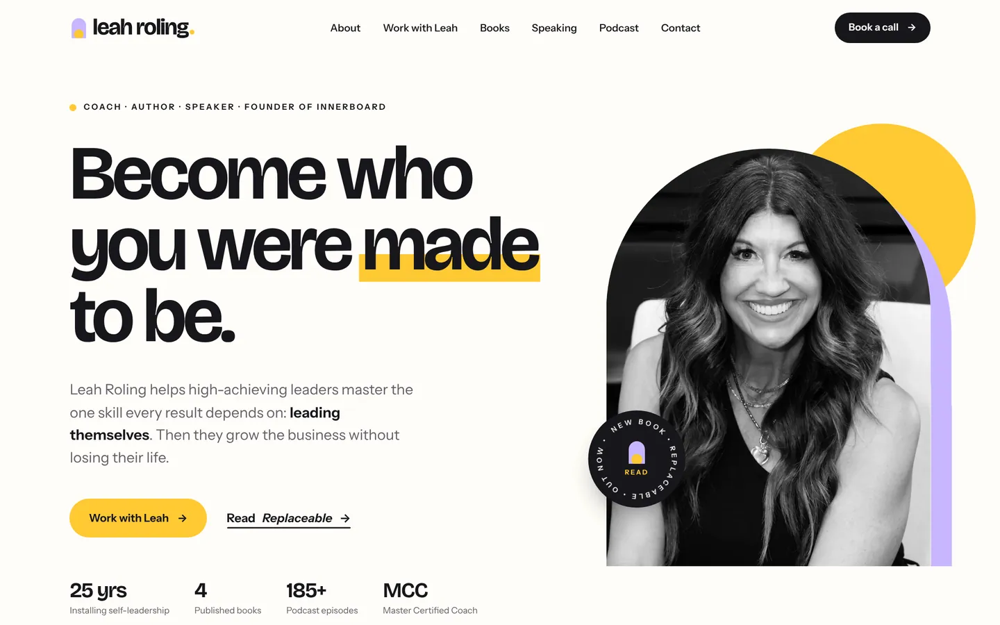
        </div>
        <div class="phone">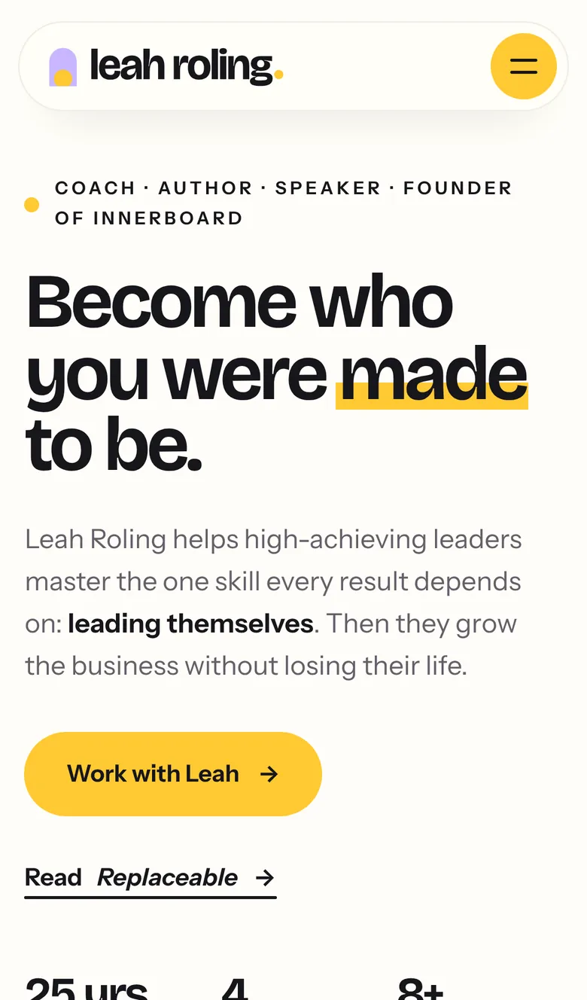</div>
      </div>
      <dl class="facts">
        <div><dt class="num">14 sections</dt><dd>One page that tells one story from start to finish.</dd></div>
        <div><dt class="num">5 visitor paths</dt><dd>Each kind of visitor has one clear next step.</dd></div>
        <div><dt class="num">71 of 71</dt><dd>Links and buttons on a phone are at least 44 px tall.</dd></div>
        <div><dt class="num">499 KB</dt><dd>First view on a phone. The median mobile page is 2,311 KB.</dd></div>
      </dl>
    </div>
  </section>

  <!-- ======= BRIEF ======= -->
  <section class="band band--sun" id="brief">
    <div class="wrap">
      <div class="head">
        <p class="label">The brief</p>
        <h2 class="h2">Five words set the <em>direction</em>.</h2>
        <p class="lede">The ask was a site that feels lively, inviting and fun while staying minimal and very modern. Each word became a rule the design follows.</p>
      </div>
      <ul class="words">
        <li><span class="big">Lively</span><p>Sunshine yellow leads. A sun rises behind her portrait when the page opens, and one word in each headline gets a highlighter swipe.</p></li>
        <li><span class="big">Inviting</span><p>Her smile is the first thing on screen. Warm white space, round corners and plain words make the page feel like a conversation.</p></li>
        <li><span class="big">Fun</span><p>The door and the sun from her logo turn up everywhere as cards, buttons and bullets. Hover a door and the sun comes up inside it. Drag the thermostat and the room warms up.</p></li>
        <li><span class="big">Minimal</span><p>Two accent colors, two typefaces and one idea per section. Every screen has one main button.</p></li>
        <li><span class="big">Modern</span><p>A floating glass menu, large rounded panels, a bold grotesk for headlines and real photos. No stock art and no clutter.</p></li>
      </ul>
    </div>
  </section>

  <!-- ======= VISITORS ======= -->
  <section class="band" id="visitors">
    <div class="wrap">
      <div class="head">
        <p class="label">Who it's for</p>
        <h2 class="h2">Five kinds of visitors. One <em>next step</em> each.</h2>
        <p class="lede">Leah serves a wide audience. The page lets each person find their part without reading everything. Pick a visitor to see the path they take.</p>
      </div>

      <div class="vtabs" role="tablist" aria-label="Visitors">
        <button class="vtab" role="tab" id="vt-0" aria-controls="vp-0" aria-selected="true">Practice owner</button>
        <button class="vtab" role="tab" id="vt-1" aria-controls="vp-1" aria-selected="false" tabindex="-1">Leadership team</button>
        <button class="vtab" role="tab" id="vt-2" aria-controls="vp-2" aria-selected="false" tabindex="-1">Event planner</button>
        <button class="vtab" role="tab" id="vt-3" aria-controls="vp-3" aria-selected="false" tabindex="-1">Individual</button>
        <button class="vtab" role="tab" id="vt-4" aria-controls="vp-4" aria-selected="false" tabindex="-1">Reader or listener</button>
      </div>

      <div class="vpanel" role="tabpanel" id="vp-0" aria-labelledby="vt-0" data-path="1,6,9,14">
        <div>
          <p class="vthought">I'm carrying this whole practice by myself.</p>
          <p class="vwho">Dental practice owners and founders. Busy, profitable and worn out. They want proof it works and a low-pressure way to talk.</p>
        </div>
        <div>
          <ol class="vsteps">
            <li><div><b>Hero</b><span>Sees her face and the promise: grow the business without losing your life.</span></div></li>
            <li><div><b>Doorways</b><span>Finds 1:1 Coaching, labelled "for owners and founders".</span></div></li>
            <li><div><b>Results</b><span>Checks the proof. One owner went from $280K to over $1M, another from one practice to five.</span></div></li>
            <li><div><b>Contact</b><span>Books the 30-minute strategy session.</span></div></li>
          </ol>
          <p class="vask"><b>The ask</b><span>Book a strategy call</span></p>
        </div>
      </div>

      <div class="vpanel" role="tabpanel" id="vp-1" aria-labelledby="vt-1" data-path="1,5,6,7" hidden>
        <div>
          <p class="vthought">We keep training people and the same problems come back.</p>
          <p class="vwho">HR leaders, executives and anyone who owns the culture. They need an idea they can explain to their own boss.</p>
        </div>
        <div>
          <ol class="vsteps">
            <li><div><b>Hero</b><span>Reads "leading themselves" and recognises the gap.</span></div></li>
            <li><div><b>Philosophy</b><span>Gets the method in a minute: two master skills, and the thermostat line.</span></div></li>
            <li><div><b>Doorways</b><span>Finds InnerBoard OS, labelled "for organizations".</span></div></li>
            <li><div><b>Replaceable</b><span>Sees the book that makes the full case to share with the team.</span></div></li>
          </ol>
          <p class="vask"><b>The ask</b><span>Request a diagnostic</span></p>
        </div>
      </div>

      <div class="vpanel" role="tabpanel" id="vp-2" aria-labelledby="vt-2" data-path="1,3,10,14" hidden>
        <div>
          <p class="vthought">I need a speaker who changes the room.</p>
          <p class="vwho">Conference hosts and association planners. They compare several speakers at once and need topics, formats and proof fast.</p>
        </div>
        <div>
          <ol class="vsteps">
            <li><div><b>Hero</b><span>Confirms she's a keynote speaker in the first line.</span></div></li>
            <li><div><b>Roles</b><span>Taps "Speaker" and jumps straight to the right section.</span></div></li>
            <li><div><b>Speaking</b><span>Reads five talks, five formats and the stages she's been on.</span></div></li>
            <li><div><b>Contact</b><span>The form opens with "Speaking" already chosen.</span></div></li>
          </ol>
          <p class="vask"><b>The ask</b><span>Check Leah's availability</span></p>
        </div>
      </div>

      <div class="vpanel" role="tabpanel" id="vp-3" aria-labelledby="vt-3" data-path="1,4,12,13" hidden>
        <div>
          <p class="vthought">I did everything right. Why do I feel this far from my own life?</p>
          <p class="vwho">High achievers who feel quietly disconnected. They aren't ready to book a call. They want to feel understood first.</p>
        </div>
        <div>
          <ol class="vsteps">
            <li><div><b>Hero</b><span>"Become who you were made to be" speaks to them directly.</span></div></li>
            <li><div><b>Her story</b><span>Recognises their own life in hers.</span></div></li>
            <li><div><b>Faith and family</b><span>Sees what she puts first.</span></div></li>
            <li><div><b>Start here</b><span>Picks one of four free field guides.</span></div></li>
          </ol>
          <p class="vask"><b>The ask</b><span>Open a free guide</span></p>
        </div>
      </div>

      <div class="vpanel" role="tabpanel" id="vp-4" aria-labelledby="vt-4" data-path="1,7,8,11" hidden>
        <div>
          <p class="vthought">I heard her on a podcast. What else has she made?</p>
          <p class="vwho">People who arrive from the show, a stage or a friend's recommendation. They want the book or the next episode.</p>
        </div>
        <div>
          <ol class="vsteps">
            <li><div><b>Hero</b><span>Follows the "Read Replaceable" link beside the main button.</span></div></li>
            <li><div><b>Replaceable</b><span>Lands on the new book with one buy button.</span></div></li>
            <li><div><b>Bookshelf</b><span>Finds the other three books.</span></div></li>
            <li><div><b>Podcast</b><span>Plays a recent episode in one tap.</span></div></li>
          </ol>
          <p class="vask"><b>The ask</b><span>Get the book or listen</span></p>
        </div>
      </div>

      <div class="maphead">
        <p class="label">The page, top to bottom</p>
        <p class="small">Each door is one section, in its real color. Lit doors are this visitor's stops.</p>
      </div>
      <ol class="map" id="map">
        <li data-n="1"><span class="door c-paper">1</span><span class="name">Hero</span></li>
        <li data-n="2"><span class="door c-sun">2</span><span class="name">Ribbon</span></li>
        <li data-n="3"><span class="door c-paper">3</span><span class="name">Roles</span></li>
        <li data-n="4"><span class="door c-cloud">4</span><span class="name">Her story</span></li>
        <li data-n="5"><span class="door c-ink">5</span><span class="name">Philosophy</span></li>
        <li data-n="6"><span class="door c-paper">6</span><span class="name">Doorways</span></li>
        <li data-n="7"><span class="door c-lilac">7</span><span class="name">Replaceable</span></li>
        <li data-n="8"><span class="door c-paper">8</span><span class="name">Bookshelf</span></li>
        <li data-n="9"><span class="door c-cloud">9</span><span class="name">Results</span></li>
        <li data-n="10"><span class="door c-paper">10</span><span class="name">Speaking</span></li>
        <li data-n="11"><span class="door c-ink">11</span><span class="name">Podcast</span></li>
        <li data-n="12"><span class="door c-paper">12</span><span class="name">Faith and family</span></li>
        <li data-n="13"><span class="door c-cloud">13</span><span class="name">Start here</span></li>
        <li data-n="14"><span class="door c-sun">14</span><span class="name">Contact</span></li>
      </ol>
    </div>
  </section>

  <!-- ======= PAGE FLOW ======= -->
  <section class="band band--alt" id="flow">
    <div class="wrap">
      <div class="head">
        <p class="label">The page</p>
        <h2 class="h2">One page, told in four <em>acts</em>.</h2>
        <p class="lede">Every section has one job. The order answers the questions a visitor asks, in the order they ask them. Hover or tap a screenshot to scroll through it.</p>
      </div>

      <div class="act">
        <div class="act__head"><span class="act__n">Act 1</span><h3 class="h3">Meet her</h3><p class="act__q">Who is this?</p></div>
        <div class="cards">
          <article class="card">
            <figure class="shot" tabindex="0"></figure>
            <div class="card__t"><span class="card__n">1</span><h4 class="h3">Hero</h4></div>
            <p class="card__job">Say who she is and what she does before anyone scrolls.</p>
            <p class="card__how">Her face, one promise and one main button. Floating cards show her credential and her podcast, and a strip below lists stages she has been on.</p>
          </article>
          <article class="card">
            <figure class="shot shot--strip"></figure>
            <div class="card__t"><span class="card__n">2</span><h4 class="h3">Ribbon</h4></div>
            <p class="card__job">Show every role she holds at a glance.</p>
            <p class="card__how">Believer, wife, mother of three, founder, author, coach, speaker, host. A tilted ribbon with every other word in outline. It drifts slowly and pauses when you hover.</p>
          </article>
          <article class="card">
            <figure class="shot" tabindex="0">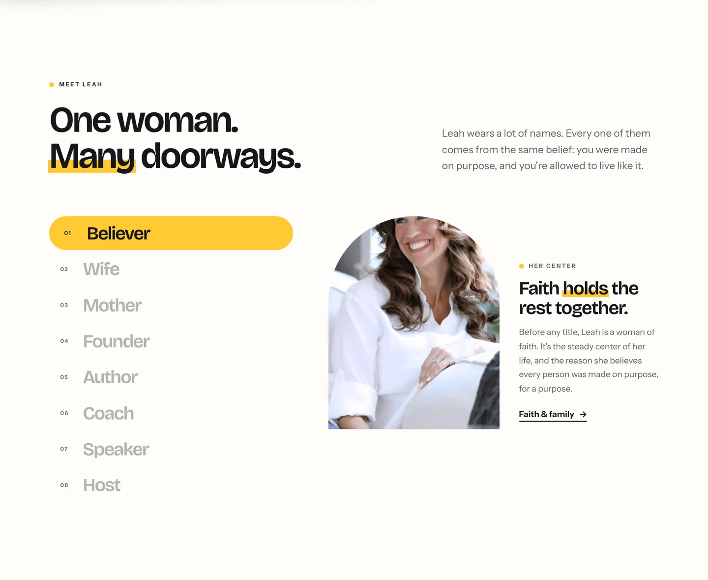</figure>
            <div class="card__t"><span class="card__n">3</span><h4 class="h3">Roles</h4></div>
            <p class="card__job">Let people pick the side of Leah they came for.</p>
            <p class="card__how">Eight tabs. Each one swaps the photo and points to the matching section further down. On a phone the list becomes chips you swipe.</p>
          </article>
          <article class="card">
            <figure class="shot" tabindex="0">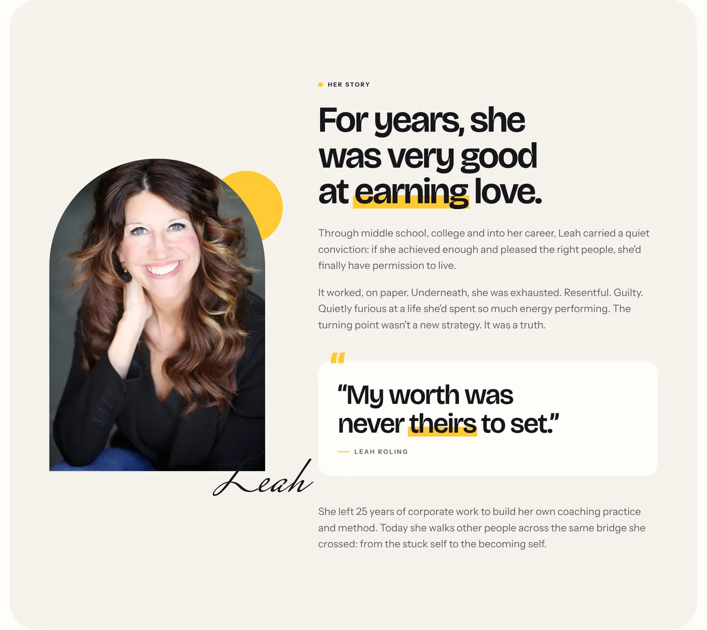</figure>
            <div class="card__t"><span class="card__n">4</span><h4 class="h3">Her story</h4></div>
            <p class="card__job">Earn trust with the honest version of how she got here.</p>
            <p class="card__how">Short paragraphs and one quote in her own words: "My worth was never theirs to set." Her signature sits beside the photo.</p>
          </article>
        </div>
      </div>

      <div class="act">
        <div class="act__head"><span class="act__n">Act 2</span><h3 class="h3">Understand the work</h3><p class="act__q">What does she believe, and how would we work together?</p></div>
        <div class="cards">
          <article class="card">
            <figure class="shot" tabindex="0">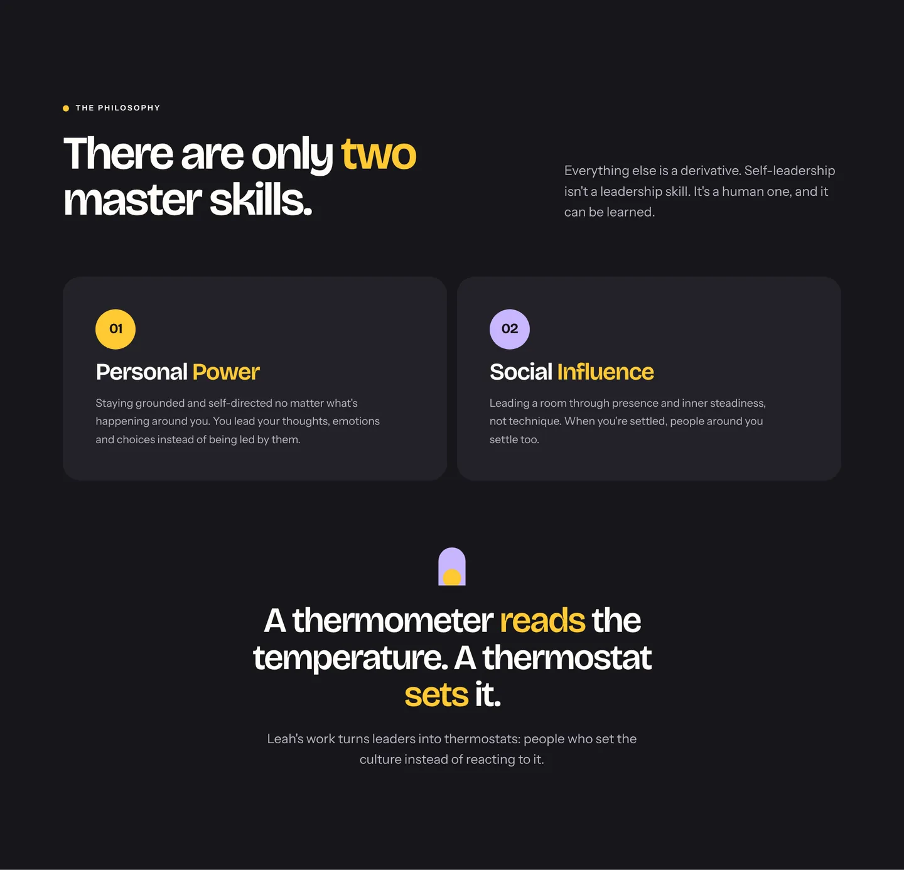</figure>
            <div class="card__t"><span class="card__n">5</span><h4 class="h3">Philosophy</h4></div>
            <p class="card__job">Explain her method in under a minute.</p>
            <p class="card__how">Two master skills, then a thermostat visitors can drag. The room warms as they set the temperature, so her best-known line becomes something you do.</p>
          </article>
          <article class="card">
            <figure class="shot" tabindex="0">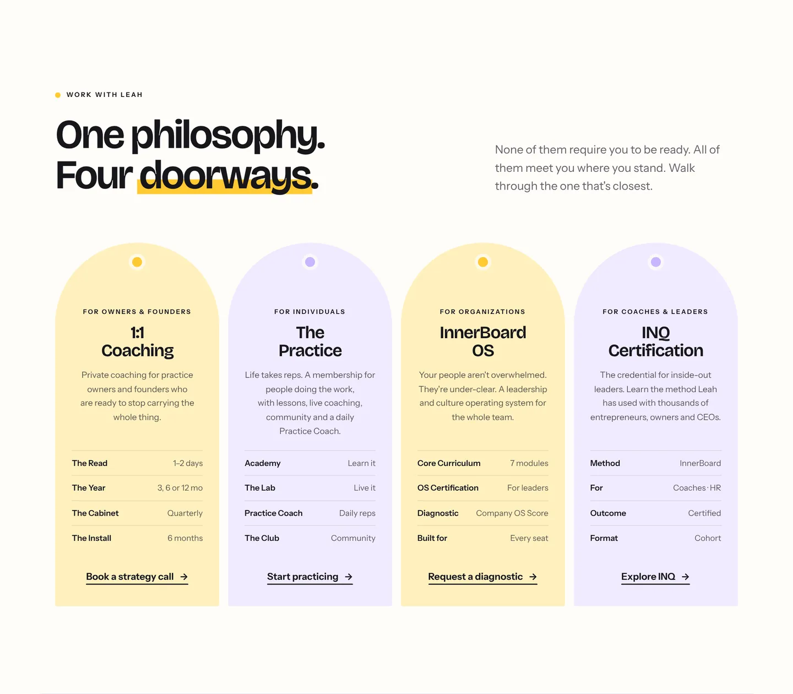</figure>
            <div class="card__t"><span class="card__n">6</span><h4 class="h3">Doorways</h4></div>
            <p class="card__job">Sort each visitor into the right offer.</p>
            <p class="card__how">Four door-shaped cards, each labelled by who it's for. The whole card is the link, so there's no small target to hit.</p>
          </article>
        </div>
      </div>

      <div class="act">
        <div class="act__head"><span class="act__n">Act 3</span><h3 class="h3">Trust her</h3><p class="act__q">Can she back it up?</p></div>
        <div class="cards">
          <article class="card">
            <figure class="shot" tabindex="0">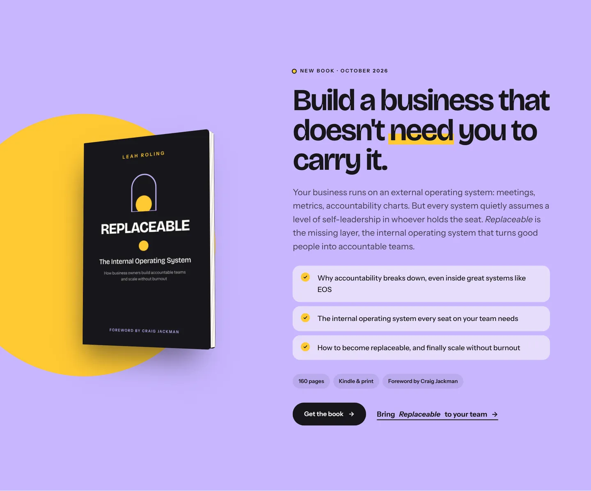</figure>
            <div class="card__t"><span class="card__n">7</span><h4 class="h3">Replaceable</h4></div>
            <p class="card__job">Launch the new book.</p>
            <p class="card__how">Her real cover as a 3D book that tilts toward the pointer. The headline is set like the cover, with "Ir" struck out of Irreplaceable.</p>
          </article>
          <article class="card">
            <figure class="shot" tabindex="0">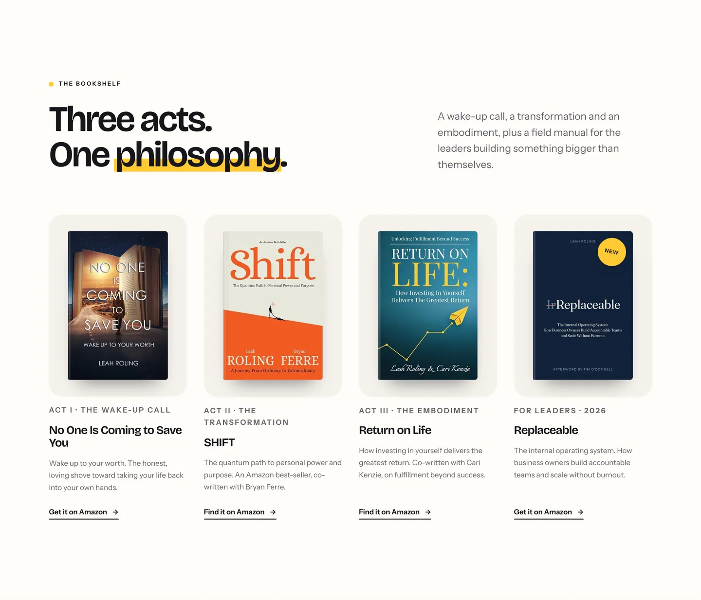</figure>
            <div class="card__t"><span class="card__n">8</span><h4 class="h3">Bookshelf</h4></div>
            <p class="card__job">Show the body of work behind the new book.</p>
            <p class="card__how">Four books, framed as three acts and a field manual. Covers lift when you hover. On a phone the shelf swipes sideways.</p>
          </article>
          <article class="card">
            <figure class="shot" tabindex="0">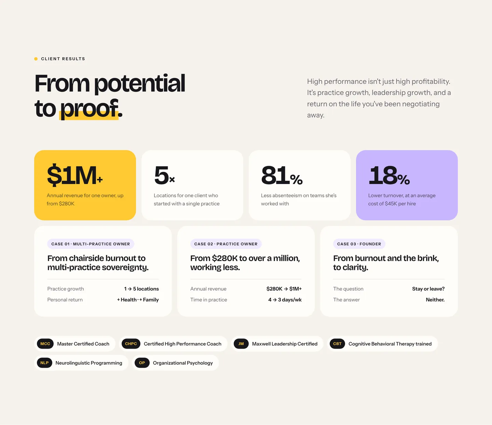</figure>
            <div class="card__t"><span class="card__n">9</span><h4 class="h3">Results</h4></div>
            <p class="card__job">Prove it with numbers.</p>
            <p class="card__how">A photo of her at work beside four headline figures that count up, then three short case stories and six credentials.</p>
          </article>
          <article class="card">
            <figure class="shot" tabindex="0">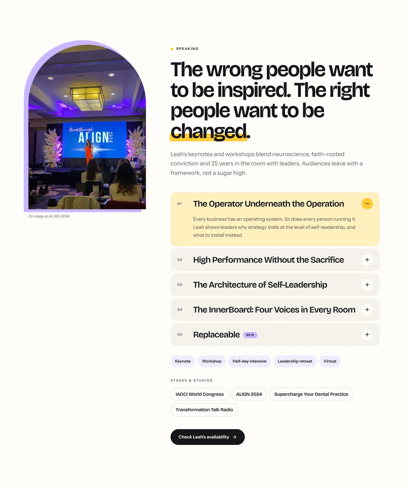</figure>
            <div class="card__t"><span class="card__n">10</span><h4 class="h3">Speaking</h4></div>
            <p class="card__job">Help an event planner say yes.</p>
            <p class="card__how">Five talks that open in place, the formats she offers and stages she's been on. The button fills in "Speaking" on the contact form.</p>
          </article>
          <article class="card">
            <figure class="shot" tabindex="0">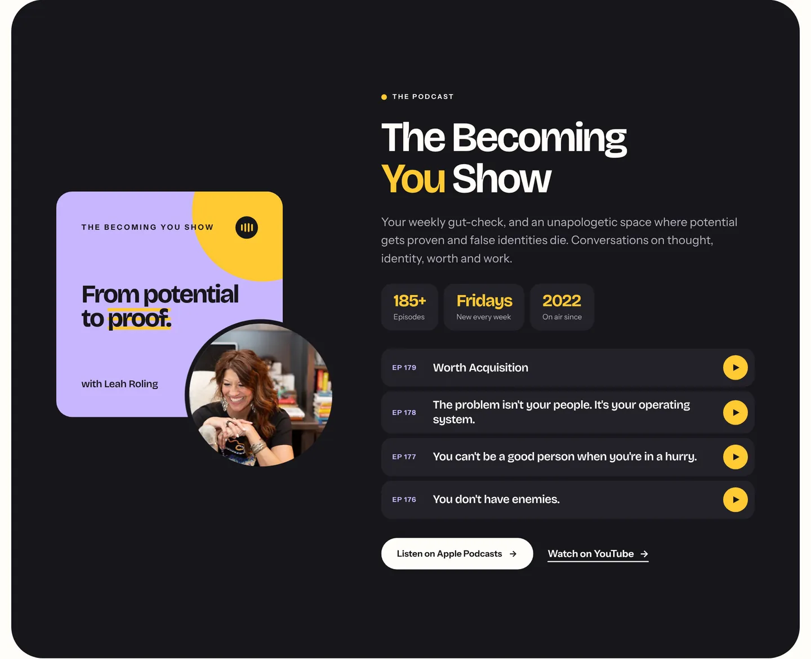</figure>
            <div class="card__t"><span class="card__n">11</span><h4 class="h3">Podcast</h4></div>
            <p class="card__job">Offer an easy way to hear her voice.</p>
            <p class="card__how">Four recent episodes, each one tap from Apple Podcasts. 185 episodes since 2022 is proof in its own right.</p>
          </article>
          <article class="card">
            <figure class="shot" tabindex="0">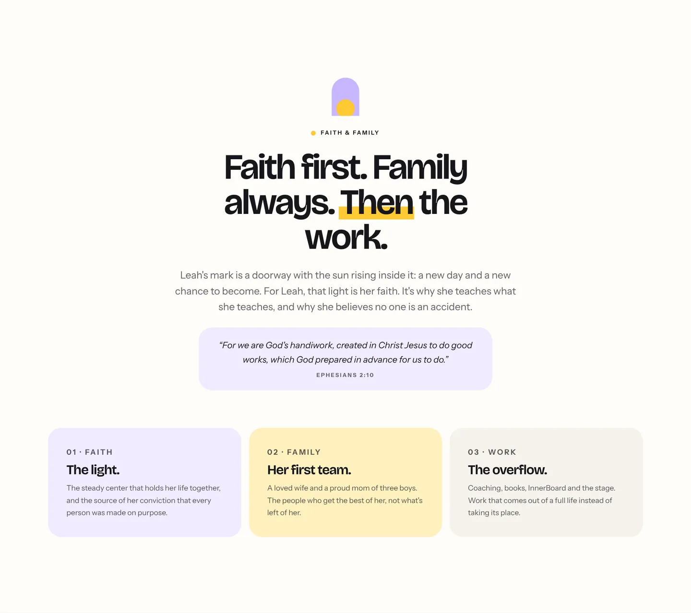</figure>
            <div class="card__t"><span class="card__n">12</span><h4 class="h3">Faith and family</h4></div>
            <p class="card__job">Show what she puts first.</p>
            <p class="card__how">Placed late on purpose. By now the visitor knows her work, so this section reads as character.</p>
          </article>
        </div>
      </div>

      <div class="act">
        <div class="act__head"><span class="act__n">Act 4</span><h3 class="h3">Take a step</h3><p class="act__q">What do I do now?</p></div>
        <div class="cards">
          <article class="card">
            <figure class="shot" tabindex="0">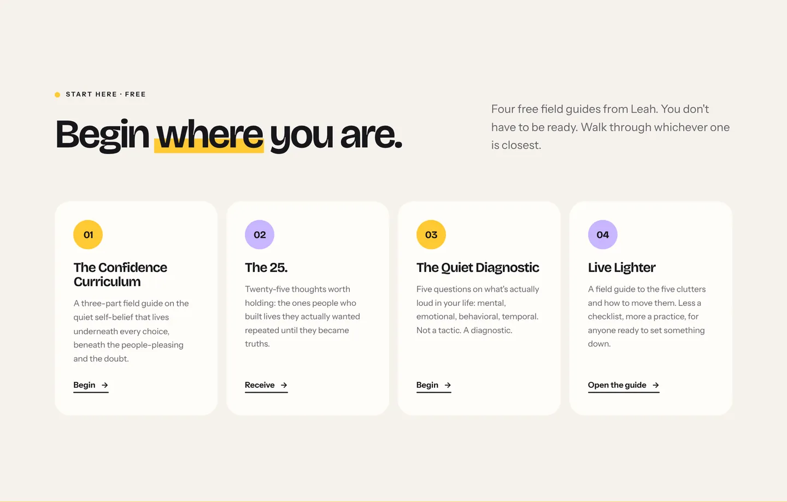</figure>
            <div class="card__t"><span class="card__n">13</span><h4 class="h3">Start here</h4></div>
            <p class="card__job">Give people who aren't ready to talk a free first step.</p>
            <p class="card__how">Four field guides Leah already offers. Each card is one tap, with no form on this page.</p>
          </article>
          <article class="card">
            <figure class="shot" tabindex="0">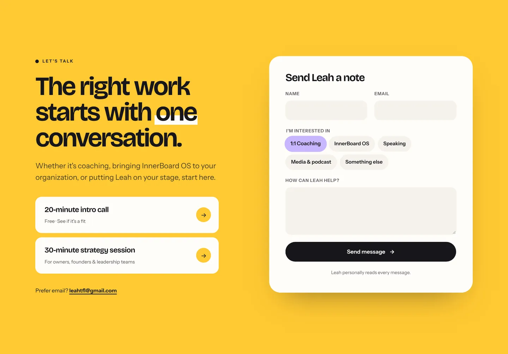</figure>
            <div class="card__t"><span class="card__n">14</span><h4 class="h3">Contact</h4></div>
            <p class="card__job">Make the conversation easy to start.</p>
            <p class="card__how">Two booking options, a short form with one-tap topics, and her email address in plain sight. The brightest section on the page.</p>
          </article>
        </div>
      </div>
    </div>
  </section>

  <!-- ======= KIT ======= -->
  <section class="band" id="kit">
    <div class="wrap">
      <div class="head">
        <p class="label">The design kit</p>
        <h2 class="h2">A small kit of <em>parts</em>.</h2>
        <p class="lede">Two accent colors, two typefaces and three shapes taken from her logo. Everything on the site is built from these, which is why it feels like one thing.</p>
      </div>
      <div class="kit">
        <div>
          <h3 class="h3">Color</h3>
          <div class="swatches">
            <div class="sw" style="--c:#ffc933"><b>Sunshine</b><div><span>Joy. Buttons, highlights and the sun.</span><br><code>#FFC933</code></div></div>
            <div class="sw" style="--c:#c8b6ff"><b>Lilac</b><div><span>Grace. Doorways and the book.</span><br><code>#C8B6FF</code></div></div>
            <div class="sw" style="--c:#17161b;--t:#fffdf8"><b>Ink</b><div><span>Truth. All text.</span><br><code>#17161B</code></div></div>
            <div class="sw" style="--c:#fffdf8"><b>Paper</b><div><span>Space. The canvas.</span><br><code>#FFFDF8</code></div></div>
            <div class="sw sw--s" style="--c:#fff0bf"><b>Butter</b><code>#FFF0BF</code></div>
            <div class="sw sw--s" style="--c:#f0ebff"><b>Lavender</b><code>#F0EBFF</code></div>
            <div class="sw sw--s" style="--c:#f5f2ec"><b>Cloud</b><code>#F5F2EC</code></div>
            <div class="sw sw--s" style="--c:#646069;--t:#fffdf8"><b>Stone</b><code>#646069</code></div>
          </div>
          <div class="ratio" role="img" aria-label="Color balance: 70 percent paper, 15 percent ink, 10 percent sunshine, 5 percent lilac"><i style="width:70%;background:#fffdf8"></i><i style="width:15%;background:#17161b"></i><i style="width:10%;background:#ffc933"></i><i style="width:5%;background:#c8b6ff"></i></div>
          <p class="small" style="margin-top:10px">The balance on any screen: about 70% paper, 15% ink, 10% sunshine and 5% lilac.</p>
        </div>

        <div>
          <h3 class="h3">Type</h3>
          <div class="two">
            <div class="spec">
              <p class="label">Headlines</p>
              <p class="spec__aa">Aa</p>
              <p class="spec__line">Bricolage Grotesque. Big, bold and a little quirky, like her.</p>
              <p class="small">Used large and tight. One word per headline gets the highlighter.</p>
            </div>
            <div class="spec spec--text">
              <p class="label">Reading</p>
              <p class="spec__aa">Aa</p>
              <p style="font-size:1.15rem">Instrument Sans. Clean and friendly at small sizes, so paragraphs, buttons and labels stay easy to read.</p>
              <p class="small">Body text is 16 to 17 px with generous line spacing.</p>
            </div>
          </div>
        </div>

        <div>
          <h3 class="h3">Shapes from the logo</h3>
          <div class="shapes">
            <div class="shape"><div class="shape__fig"><span class="fig-door"></span><span class="fig-door" style="width:46px;height:66px;background:var(--tint-sun)"></span></div><h4 class="h3">The door</h4><p>Photo crops, offer cards and the frame behind her portrait. It comes from her line "One philosophy. Many doorways."</p></div>
            <div class="shape"><div class="shape__fig"><span class="fig-sun"></span><span class="fig-sun" style="width:34px;height:34px"></span><span class="fig-sun" style="width:12px;height:12px"></span></div><h4 class="h3">The sun</h4><p>Step numbers, play buttons, label dots and the period in her name. A new day is the idea behind the whole brand.</p></div>
            <div class="shape"><div class="shape__fig"><span class="fig-pill">Book a call</span></div><h4 class="h3">The pill</h4><p>Buttons, tabs, chips and tags. Fully round ends make every control look easy to press.</p></div>
          </div>
        </div>

        <div>
          <h3 class="h3">Live parts</h3>
          <p class="small" style="margin:-10px 0 18px">These are the real components from the site. Hover, tap or type.</p>
          <div class="stage">
            <div class="cell">
              <p class="cell__cap">Buttons and links</p>
              <div class="row">
                <button class="sb sb--sun" type="button">Work with Leah <i aria-hidden="true">→</i></button>
                <button class="sb" type="button">Book a call <i aria-hidden="true">→</i></button>
                <button class="sl" type="button">Read Replaceable <i aria-hidden="true">→</i></button>
              </div>
            </div>
            <div class="cell">
              <p class="cell__cap">Role chips</p>
              <div class="row" id="chips">
                <button class="sc" type="button" aria-pressed="true">Believer</button>
                <button class="sc" type="button" aria-pressed="false">Wife</button>
                <button class="sc" type="button" aria-pressed="false">Mother</button>
                <button class="sc" type="button" aria-pressed="false">Founder</button>
                <button class="sc" type="button" aria-pressed="false">Author</button>
              </div>
            </div>
            <div class="cell">
              <p class="cell__cap">Doorway card</p>
              <div class="sd" tabindex="0"><i aria-hidden="true"></i><small>For owners and founders</small><b>1:1 Coaching</b><span>Hover or focus and the sun comes up.</span></div>
            </div>
            <div class="cell">
              <p class="cell__cap">Talk topic</p>
              <details class="st" open><summary>High Performance Without the Sacrifice</summary><p>Ambition and a full life can live together. A practical framework for performing at your best.</p></details>
              <details class="st"><summary>The Architecture of Self-Leadership</summary><p>Personal Power and Social Influence, and how teams build them on purpose.</p></details>
            </div>
            <div class="cell">
              <p class="cell__cap">Podcast episode</p>
              <div class="se"><small>EP 178</small><b>The problem isn't your people. It's your operating system.</b><i aria-hidden="true"></i></div>
            </div>
            <div class="cell">
              <p class="cell__cap">Form field and topics</p>
              <div class="sf"><label for="demo-name">Name</label><input id="demo-name" type="text" placeholder="Click here to see the focus ring" autocomplete="off"></div>
              <div class="row">
                <label class="sp"><input type="radio" name="demo-topic" id="demo-t1" checked><span>1:1 Coaching</span></label>
                <label class="sp"><input type="radio" name="demo-topic" id="demo-t2"><span>Speaking</span></label>
                <label class="sp"><input type="radio" name="demo-topic" id="demo-t3"><span>InnerBoard OS</span></label>
              </div>
            </div>
          </div>
        </div>
      </div>
    </div>
  </section>

  <!-- ======= MOTION ======= -->
  <section class="band band--dark" id="motion">
    <div class="wrap">
      <div class="head">
        <p class="label">Motion</p>
        <h2 class="h2">Motion with a <em>job</em>.</h2>
        <p class="lede">Each animation points at something or confirms an action. Nothing holds the content back, and visitors who switch on reduced motion get a still page.</p>
      </div>
      <div class="motion">
        <div>
          <div class="mini" id="mini" aria-label="A small copy of the site's opening animation">
            <p class="mini__h" aria-hidden="true"><span><b>Become who</b></span><span><b>you were <em>made</em></b></span><span><b>to be.</b></span></p>
            <div class="mini__v" aria-hidden="true">
              <span class="mini__sun"></span><span class="mini__door"></span>
              <div class="mini__p"></div>
            </div>
          </div>
          <button class="replay" type="button" id="replay">Play the opening <span aria-hidden="true">↻</span></button>
        </div>
        <ul class="moves">
          <li><b>The sunrise</b><span>The sun and the lilac door slide out from behind her portrait when the page opens. It sets the mood in the first second while her face and the headline are already on screen.</span></li>
          <li><b>The highlighter</b><span>A yellow swipe draws under one word per headline as it scrolls into view. It tells the eye which word matters.</span></li>
          <li><b>Doors that light up</b><span>Hover an offer and the sun rises inside the door. It makes each offer feel like something to walk through.</span></li>
          <li><b>Buttons that fill</b><span>Color grows from the centre of a button on hover, so you know it's live before you click.</span></li>
          <li><b>The thermostat</b><span>Drag the sun along the track and the dark panel warms from the floor up. It is the one playful moment on the page, and it teaches her main idea.</span></li>
          <li><b>Numbers that count</b><span>Result figures count up once as they appear, which pulls attention to the proof.</span></li>
        </ul>
      </div>
    </div>
  </section>

  <!-- ======= DEVICES ======= -->
  <section class="band band--lilac" id="devices">
    <div class="wrap">
      <div class="head">
        <p class="label">Devices</p>
        <h2 class="h2">Designed on a phone <em>first</em>.</h2>
        <p class="lede">Most visitors will arrive on a phone, often from Instagram or a podcast app. The layout is built at that size and then grows to fit bigger screens.</p>
      </div>
      <div class="trio">
        <figure><div class="phone"></div><figcaption>Phone · 390 px</figcaption></figure>
        <figure><div class="tablet">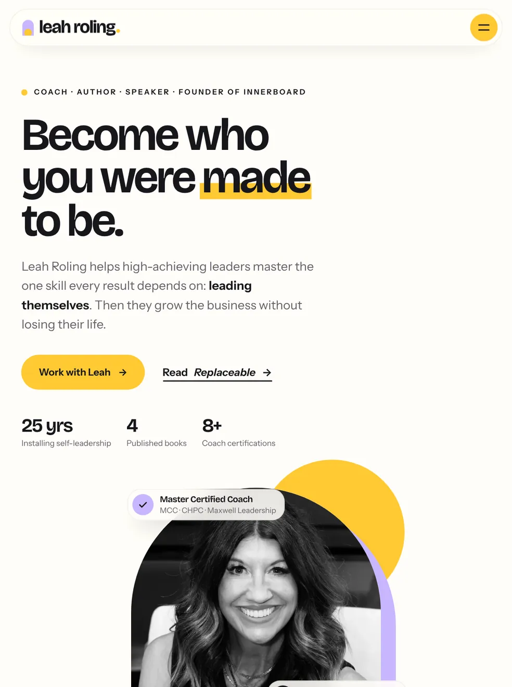</div><figcaption>Tablet · 820 px</figcaption></figure>
        <figure><div class="browser"><div class="browser__bar" aria-hidden="true"><i></i><i></i><i></i></div></div><figcaption>Desktop · 1440 px</figcaption></figure>
      </div>
      <div class="adapt">
        <div>
          <h3 class="h3" style="margin-bottom:18px">What changes on a phone</h3>
          <ul class="changes">
            <li><b>Menu</b><span>Six links fold into one round yellow button that opens a full-screen menu.</span></li>
            <li><b>Roles</b><span>The tall list becomes a row of chips to swipe.</span></li>
            <li><b>Offers</b><span>Four doors stack, one per row, each a full-width tap target.</span></li>
            <li><b>Books</b><span>The shelf swipes sideways and snaps to each cover.</span></li>
            <li><b>Booking</b><span>A "Book a call" bar stays at the bottom after the first screen.</span></li>
            <li><b>Type</b><span>Headline sizes scale smoothly with the screen, with no sudden jumps.</span></li>
          </ul>
        </div>
        <div class="phones">
          <figure><div class="phone">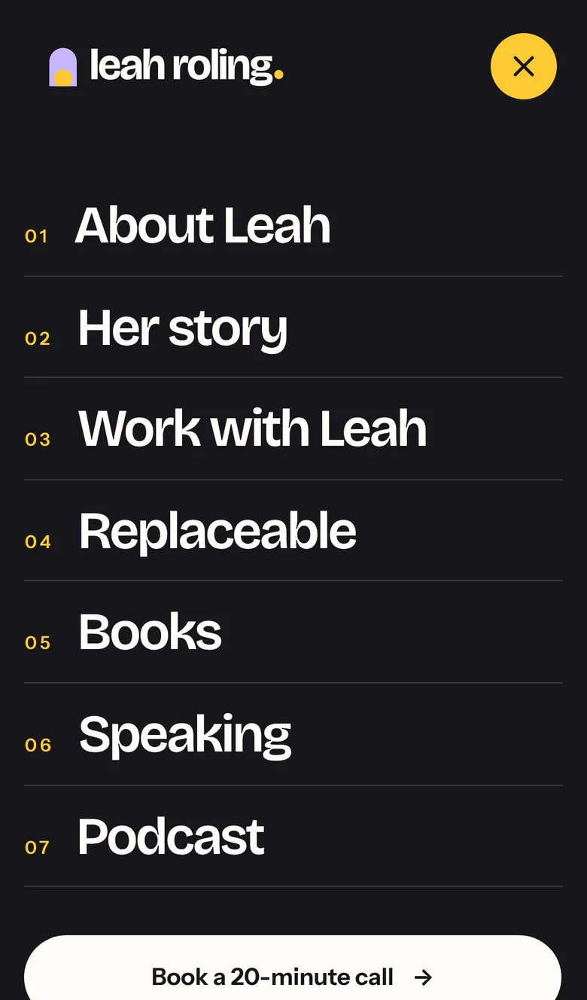</div><figcaption>Full-screen menu</figcaption></figure>
          <figure><div class="phone">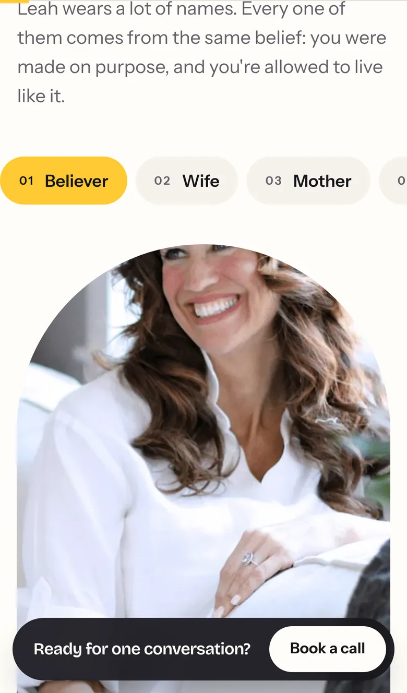</div><figcaption>Roles as chips</figcaption></figure>
          <figure><div class="phone">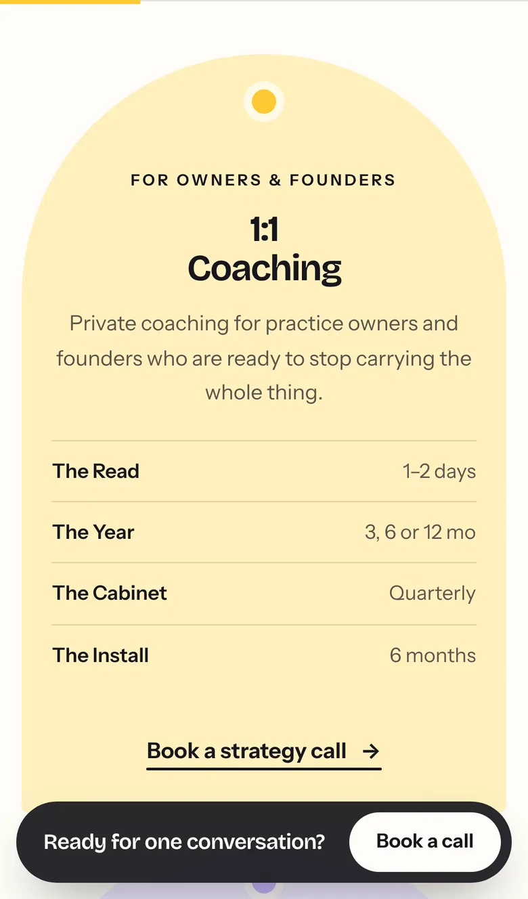</div><figcaption>Doors and booking bar</figcaption></figure>
        </div>
      </div>
    </div>
  </section>

  <!-- ======= ACCESS ======= -->
  <section class="band" id="access">
    <div class="wrap">
      <div class="head">
        <p class="label">Accessibility</p>
        <h2 class="h2">Easy for <em>everyone</em> to use.</h2>
        <p class="lede">These figures come from automated checks run against the finished page at phone size. The contrast standard for body text is 4.5 to 1.</p>
      </div>
      <div class="pairs">
        <div class="pair" style="--c:#fffdf8;--t:#17161b"><b>Aa</b><div><span>Ink on Paper</span><br><strong class="num">17.7 : 1</strong></div></div>
        <div class="pair" style="--c:#ffc933;--t:#17161b"><b>Aa</b><div><span>Ink on Sunshine</span><br><strong class="num">11.7 : 1</strong></div></div>
        <div class="pair" style="--c:#c8b6ff;--t:#17161b"><b>Aa</b><div><span>Ink on Lilac</span><br><strong class="num">9.9 : 1</strong></div></div>
        <div class="pair" style="--c:#fffdf8;--t:#646069"><b>Aa</b><div><span>Stone on Paper</span><br><strong class="num">6.0 : 1</strong></div></div>
      </div>
      <div class="checks">
        <div class="check"><strong class="num">71 of 71</strong><b>Tap targets</b><p>Every link and button on a phone is at least 44 px tall, the size a thumb needs.</p></div>
        <div class="check"><strong class="num">26 of 26</strong><b>Images described</b><p>Every photo and cover has a text description for screen readers.</p></div>
        <div class="check"><strong class="num">46 headings</strong><b>In order</b><p>One main heading and no skipped levels, so the page outline makes sense when read aloud.</p></div>
        <div class="check"><strong>Keyboard</strong><b>No mouse needed</b><p>A skip link, visible focus rings, arrow keys on the role tabs and Escape to close the menu.</p></div>
        <div class="check"><strong>Still mode</strong><b>Reduced motion</b><p>If someone's device asks for less motion, the animations switch off.</p></div>
        <div class="check"><strong>Fail-safe</strong><b>Works without scripts</b><p>If JavaScript fails to load, every section still shows and every link still works.</p></div>
      </div>
    </div>
  </section>

  <!-- ======= SPEED ======= -->
  <section class="band band--alt" id="speed">
    <div class="wrap">
      <div class="head">
        <p class="label">Speed</p>
        <h2 class="h2">Light and <em>fast</em>.</h2>
        <p class="lede">A phone on a weak signal should still get her face and the headline quickly. The page sends about a fifth of what a typical site does.</p>
      </div>
      <div class="speed">
        <div>
          <div class="bars">
            <div class="bar bar--site">
              <div class="bar__top"><span>Leah's site, first view on a phone</span><b class="num">499 KB</b></div>
              <div class="bar__track"><div class="bar__fill" style="width:21.6%"></div></div>
            </div>
            <div class="bar">
              <div class="bar__top"><span>Median mobile web page</span><b class="num">2,311 KB</b></div>
              <div class="bar__track"><div class="bar__fill" style="width:100%"></div></div>
            </div>
            <p class="small">Median from the HTTP Archive Web Almanac 2024. Leah's figure was measured in a phone-sized browser against a local copy of the site.</p>
          </div>
          <div class="stats4">
            <div class="stat"><strong class="num">13 files</strong><span>to show the first screen. The median page asks for 66.</span></div>
            <div class="stat"><strong class="num">747 KB</strong><span>for the whole page, top to bottom.</span></div>
            <div class="stat"><strong class="num">0</strong><span>layout shift. Nothing jumps while it loads.</span></div>
            <div class="stat"><strong class="num">0</strong><span>trackers or outside scripts.</span></div>
          </div>
        </div>
        <ul class="how">
          <li><span><b>No frameworks.</b> Plain HTML, CSS and a small script. Nothing to update and nothing to break.</span></li>
          <li><span><b>Fonts on her own site.</b> Three font files, 137 KB in total, with no call to an outside font service.</span></li>
          <li><span><b>Right-sized photos.</b> Each photo is saved in a modern format at several sizes, and the browser picks the smallest one that looks sharp.</span></li>
          <li><span><b>Loads as you go.</b> Images below the first screen wait until you scroll near them.</span></li>
          <li><span><b>Ready for search and sharing.</b> The page tells search engines who she is and lists her four books, and links shared by text or social show a designed preview card.</span></li>
          <li><span><b>Hosts anywhere.</b> It is a folder of files, so it runs on free hosting with no monthly platform fee.</span></li>
        </ul>
      </div>

      <div class="fixes">
        <h3 class="h3">Four things this review fixed</h3>
        <div class="fixlist">
          <div class="fix"><p class="fix__delta num"><s>3.2 s</s> <mark>0.1 s</mark></p><b>Her face and the headline appear at once</b><p>An intro animation held the main content back for about three seconds on a first visit. It's gone. Times are from the same local test, so real connections will add download time to both.</p></div>
          <div class="fix"><p class="fix__delta num"><s>245 KB</s> <mark>137 KB</mark></p><b>Lighter fonts</b><p>The font files carried a width setting the design never used. Removing it cut them by 44% with no visible change.</p></div>
          <div class="fix"><p class="fix__delta num"><s>36 too small</s> <mark>0 too small</mark></p><b>Bigger tap targets</b><p>Thirty-six links and buttons, mostly small text links in the footer and on cards, were shorter than 44 px on a phone. All of them now pass.</p></div>
          <div class="fix"><p class="fix__delta num"><s>88 hidden</s> <mark>0 hidden</mark></p><b>Content shows even if a script fails</b><p>Sections used to wait for JavaScript before fading in. Now the fade is an extra, and the content is there either way.</p></div>
        </div>
      </div>
    </div>
  </section>

  <!-- ======= NEXT ======= -->
  <section class="band band--sun" id="next">
    <div class="wrap">
      <div class="head">
        <p class="label">Next</p>
        <h2 class="h2">Before it goes <em>live</em>.</h2>
        <p class="lede">Five things would make the site stronger. None of them block a launch, and the first three need Leah.</p>
      </div>
      <ul class="todo">
        <li><div><b>Add named testimonials</b><span>The three case stories are anonymous. Two or three quotes with a name and a face would add more trust than any design change.</span></div></li>
        <li><div><b>Shoot photos for the new palette</b><span>Her current photos work. A short session on plain backgrounds with yellow, lilac, black and white would tie the photos to the brand.</span></div></li>
        <li><div><b>Approve the personal copy</b><span>The faith and family wording and the Bible verse were written for her. They should be in her words.</span></div></li>
        <li><div><b>Connect the form to an inbox</b><span>The form opens the visitor's email app today. A form service would deliver messages straight to her.</span></div></li>
        <li><div><b>Watch five people use it</b><span>Ask five people from her audience to find a talk topic and book a call. Fix whatever slows them down.</span></div></li>
      </ul>
    </div>
  </section>
</main>

<footer class="foot">
  <div class="wrap">
    <div>
      <svg viewBox="0 0 200 260" aria-hidden="true"><defs><clipPath id="fb"><path d="M10 260V100a90 90 0 0 1 180 0v160z"/></clipPath></defs><path d="M10 260V100a90 90 0 0 1 180 0v160z" fill="#c8b6ff"/><g clip-path="url(#fb)"><circle cx="100" cy="212" r="60" fill="#ffc933"/></g></svg>
      <span>Prepared for Leah Roling. Website UI &amp; UX overview, November 2026.</span>
    </div>
    <span>Screenshots and measurements are from the current build of the site.</span>
  </div>
</footer>

<script>
(function () {
  // ---- Visitors: tabs + the page map ----
  var tabs = Array.prototype.slice.call(document.querySelectorAll(".vtab"));
  var doors = Array.prototype.slice.call(document.querySelectorAll("#map li"));
  function select(tab, focus) {
    tabs.forEach(function (t) {
      var on = t === tab;
      t.setAttribute("aria-selected", String(on));
      t.tabIndex = on ? 0 : -1;
      document.getElementById(t.getAttribute("aria-controls")).hidden = !on;
    });
    var path = document.getElementById(tab.getAttribute("aria-controls")).dataset.path.split(",");
    doors.forEach(function (li) {
      var i = path.indexOf(li.dataset.n);
      li.classList.toggle("on", i > -1);
      var d = li.querySelector(".door");
      if (i > -1) d.dataset.step = i + 1; else delete d.dataset.step;
    });
    if (focus) tab.focus();
    try { tab.scrollIntoView({ block: "nearest", inline: "nearest" }); } catch (e) {}
  }
  tabs.forEach(function (tab, i) {
    tab.addEventListener("click", function () { select(tab); });
    tab.addEventListener("keydown", function (e) {
      var d = e.key === "ArrowRight" ? 1 : e.key === "ArrowLeft" ? -1 : 0;
      if (d) { e.preventDefault(); select(tabs[(i + d + tabs.length) % tabs.length], true); }
    });
  });
  if (tabs.length) {
    var path0 = document.getElementById("vp-0").dataset.path.split(",");
    doors.forEach(function (li) { var i = path0.indexOf(li.dataset.n); if (i > -1) { li.classList.add("on"); li.querySelector(".door").dataset.step = i + 1; } });
  }

  // ---- Screenshots: tap to scroll through, tap again to go back ----
  document.querySelectorAll(".shot[tabindex]").forEach(function (s) {
    s.addEventListener("click", function () { s.classList.toggle("is-on"); });
    s.addEventListener("keydown", function (e) { if (e.key === "Enter" || e.key === " ") { e.preventDefault(); s.classList.toggle("is-on"); } });
  });

  // ---- Live parts: role chips ----
  var chips = Array.prototype.slice.call(document.querySelectorAll("#chips .sc"));
  chips.forEach(function (c) {
    c.addEventListener("click", function () { chips.forEach(function (o) { o.setAttribute("aria-pressed", String(o === c)); }); });
  });

  // ---- Motion: replay the opening ----
  var mini = document.getElementById("mini"), replay = document.getElementById("replay");
  function play() { mini.classList.remove("play"); void mini.offsetWidth; mini.classList.add("play"); }
  if (mini && replay) {
    replay.addEventListener("click", play);
    if ("IntersectionObserver" in window) {
      var io = new IntersectionObserver(function (en) { if (en[0].isIntersecting) { play(); io.disconnect(); } }, { threshold: 0.5 });
      io.observe(mini);
    }
  }
})();
</script>
